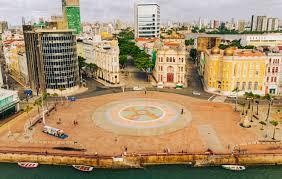

O **Marco Zero** é um dos principais símbolos do Recife, capital de Pernambuco. Localizado na **Praça Rio Branco**, no bairro do Recife Antigo, ele marca o início das distâncias rodoviárias do estado e é um ponto central da vida cultural da cidade. A praça abriga a **Rosa dos Ventos**, obra do artista Cícero Dias, que representa a conexão do Recife com o mundo. Ao redor do Marco Zero, a cidade pulsa com eventos como o **Carnaval**, além de oferecer uma vista deslumbrante para o **Porto do Recife** e o **Parque das Esculturas de Francisco Brennand**. Próximo dali, atrações como o **Paço do Frevo** e o **Cais do Sertão** celebram a rica cultura pernambucana. O Marco Zero não é apenas um marco geográfico, mas um símbolo da identidade vibrante e histórica do Recife, misturando tradição, arte e alegria em um só lugar. É um ponto imperdível para quem visita a cidade.
